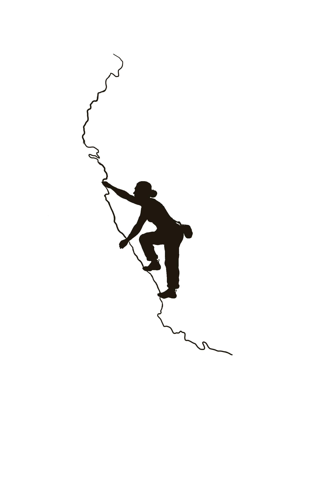
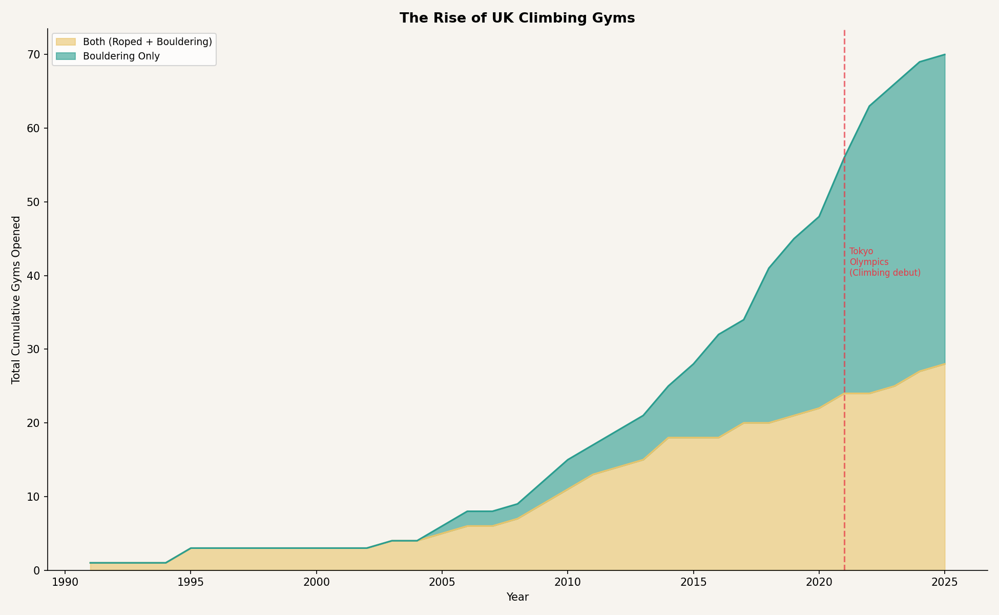
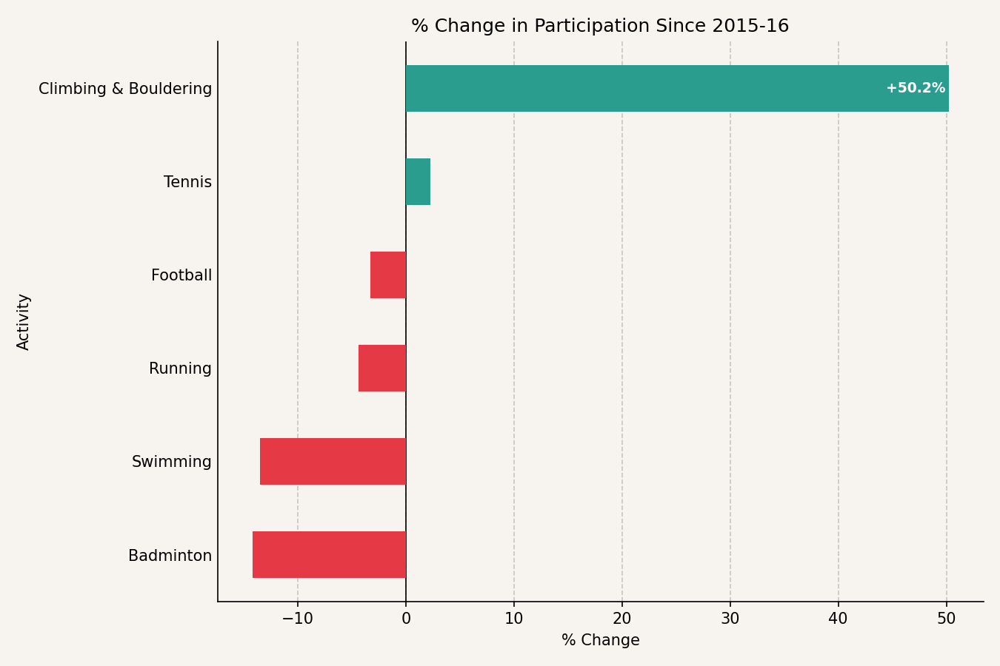
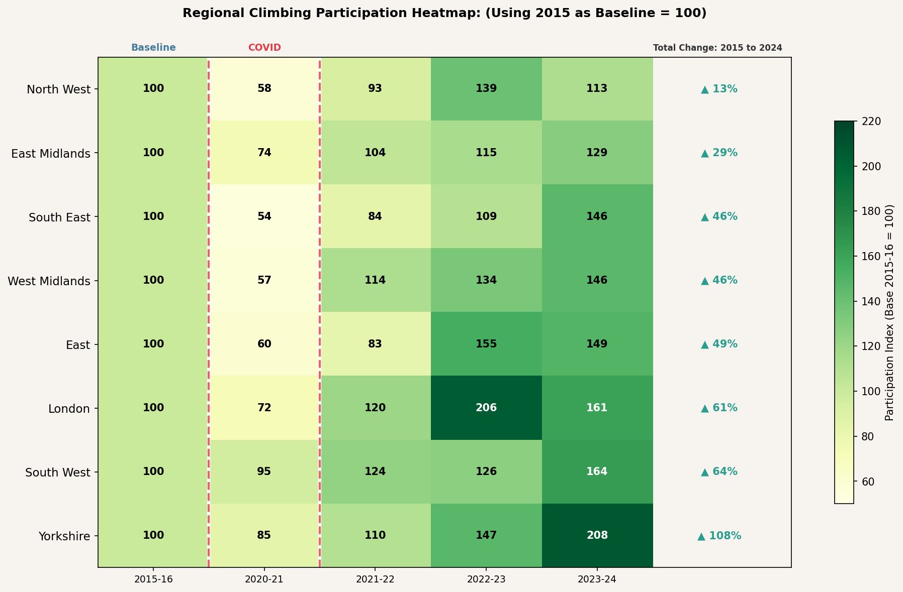
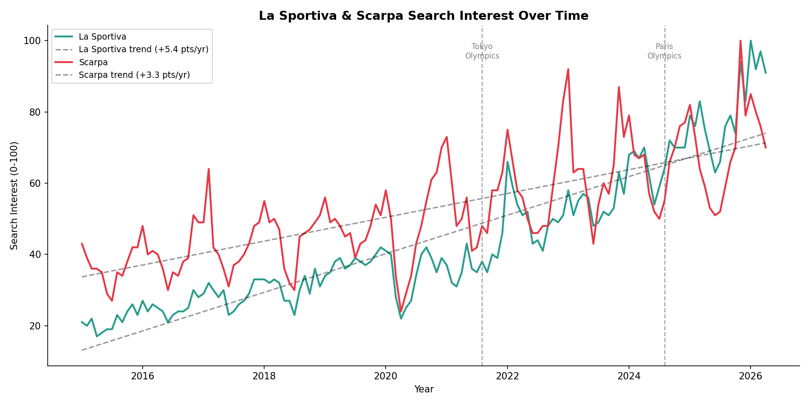
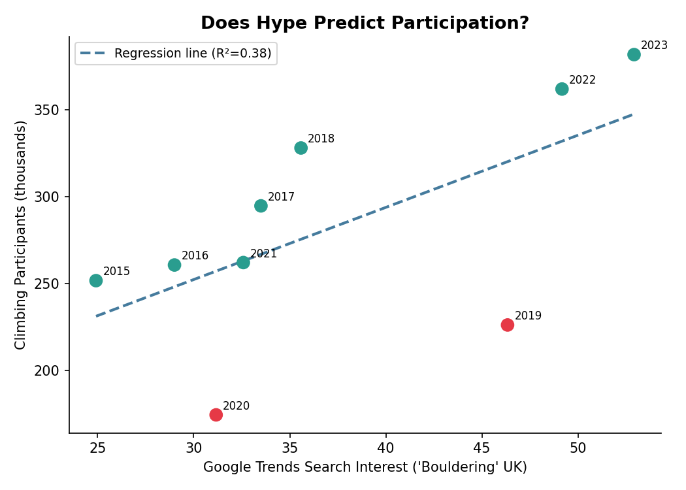
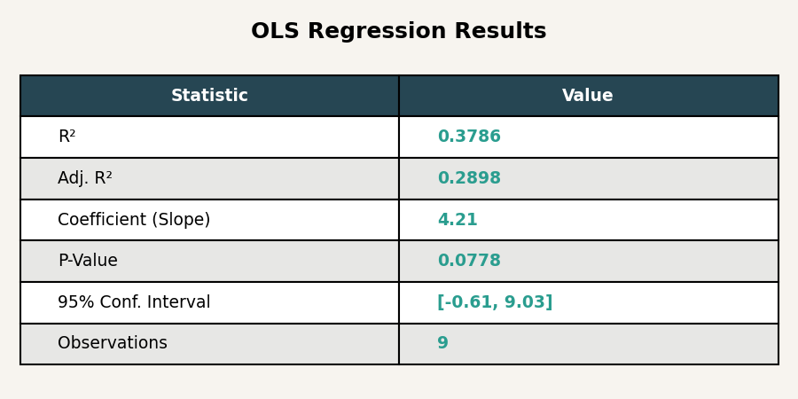

Exploring and analysing the different factors around the upbringing of climbing, digging deeper into the data and examining what/who are the drivers of this fast growing sport.
May•2026

The world of climbing has seen an unprecedented growth, seemingly everyone is trying out the sport. Climbing was once a niche sport that was only done by a small group of people, now it has grown tremendously. This sport is beginner friendly, and easy to start, you simply climb up! In addition, it has become a place for people to socialize with friends and overall, a chill sport.
This blog will look into the detail of the rise of climbing, using data sources to produce insightful data that could perhaps explain what/who is driving this boom. We look into several factors and uncover some interesting results. Social media has definitely shown its likeliness of the sport.
So, using google trends data we explore an advance modelling technique: regression, to see if the hype around bouldering is real. Are people really showing up, or is it just hyped?
What People Are Saying
"I think climbing is more mainstream these days. I just think it's one of those sports that's just kind of been picked up."
Oliver Elphick — Climbing Hut Shrewsbury, BBC News, Feb 2026
"Climbing is currently undergoing a paradigm shift. The rise in popularity has meant that it is becoming ever more accessible for first-time climbers."
George Roberts — The Oxford Blue, Jan 2025
The quotes above definitely sound like climbing is on the rise. So will the data support this?
About this Project
3Data Sources
7Charts & Plots
UKFocus Region
01 The Analysis
The following charts will paint a picture into what has really drove participation. The data has been collected and cleaned to produce the plots below
The visualisations will hopefully build a complete picture of climbing's trajectory in the UK.
30 years ago, climbing gyms were scarce and barely any popularity. Today, there are everywhere, let us explore the chart below to see what has happend.

Chart 1: The cumulative rise of climbing gyms. Area chart of the number of climbing gyms over the years from period 1995-2025
The reality is, there has definitely been a boom in the no. of gyms popping up, with bouldering noticeably booming. Back in 1995, climbing gyms were hardly around, then around 2004/2005 that was when it started to pop off, more gyms started opening up, and every year after that, there has been a significant rise in the number of openings.
The graph also shows something interesting.Bouldering only gyms have really seen a boom, perhaps noting that maybe the ease of climbing without ropes and low levels of experience needed seemed to attract more attention? Nevertheless, the has been a dramatic uptake in the amount of gym openings for both categories. The industry is showing that huge investment into the sport, suggesting investors are noticing big changes and opportunity.
But now we must answer another question Do levels of participants back the story? Are more people really climbing? We look at next chart below.

Chart 2: Climbing vs other sports. A bar chart showing the % level changes to each sport from 2015 to 2024
Here we look at data from Sport England, where they produce a yearly database containing types of activities people have participated in over the last year. The chart reveals something clear, more people are climbing and its rising faster than most popular sports.
Comparing 2015 to 2024 levels, climbing has seen an impressive 50.2% increase in its levels of participants, this is well clear of some of the other popular sports, with only tennis seeing a slight increase in levels from 2015. This for sure back up the data, more gyms + more people climbing are two powerful signals that this sport has really been taking off!
Now we can break this down even more, who exactly is driving this boom? The next chart reveals something fascinating.
The chart below is interactive — hover over the data points to explore age-based climbing trends in detail
Chart 3: Participation levels across each age group. Interactive line chart, showing how each age category has changed over the years
people in the [55-64] bracket have seen the biggest growth taking up the sport! What is often portrayed in the media as a sport for young people, has now been proven that it is not the case. Although in absolute terms, younger people still make the larger share of active climbers, the results are clear, it is the [55-64] age bracket that have really been drivers in the sport, outpacing all age brackets.
It seems that the Tokyo Olympics seem to of had a big impact on the [55-64] category, seeing the biggest year-on-year change over the 21-22 and 22-23 period! Additionally, for all age groups, there has been a rise from the base level 100, for the last 2 years, noting that climbing is more of a recent boom. Nevertheless, it has clearly shown its popularity!
We can see that climbing is a sport for everyone no matter the age, a total beginner can start with ease, and the data so far is showing just how much people appreciate the sport.
We now turn to look at the geographical data across the regions in England. Well, we have established more people are taking up the sport, but could there be regional difference with cause this spike. Such that only popular regions have really see a growth in climbing but maybe not so much in others? The next chart shows the details of this.

Chart 4: English regional data about participation A heatmap using year 2015-16 as the base index = 100
The heatmap shows something fascinating. Firstly, every single region in England has seen an uptake in the sport since 2015. Year 2020-21 rightly dropped due to Covid, but figures show participation bounced back quickly post-covid. Even more interestingly it grew even more then pre-covid levels!
Yorkshire has seen an incredible growth, consistent increase in numbers and more than doubling from 2015, South West following with a 64% increase and just behind is London with a 61% increase. Looking at the map, there does not seem any evidence to suggest that regional differences have a direct effect on climbing participation, such that cities large and small have seen similar growth effects.
It is worth noting that Year 2021-22 was when climbing was debuted on Tokyo Olympics, the year following suggest a post-covid and maybe post Olympics surge working to boost levels of partaking in climbing.
So far, the data is suggesting there is more and more people taking up the sport, so now we look at a different angle. With climbing you need fancy equipment such as climbing shoes. So, let’s see if more people are really taking up climbing, is there an uptake of google searches for climbing shoes?

Chart 5: Google trends of climbing shoes A line chart showing the trends of shoes 'Scarpa' and 'La Sportiva'
Here we have Google trends data search of popular shoe brands: Scarpa and La Sportiva. The graph shows something clear, there has been a consistent increase of searches for these shoes, with La Sportiva shoes being slightly more popular than Scarpa.
Dashed lines have been drawn to show the overall trend in searches, which highlights the upward movement. The graph shows peaks and troughs, with the peak happing during Dec-Jan time, which makes sense to buy the shoes at a discount!
The graph suggest that it is not just about more people taking part, the business side is booming too. Considering the highest peaks over the 10-year period happened very recently, it could suggest that the climbing shoes companies are going to see rises in profits over the near future.
To finalised, we look at some advance modelling, so let’s see whether the hype around bouldering correlates with people actually climbing, we will use a regression analysis to answer that.

Chart 6: Advance modelling. A regression analysis using google trend data of
'bouldering' and plotting against the climbing participation.

Chart 6: Statistical table Statsitics found from Chart 6
Here we run a regression analysis using Google trend searches of ‘Bouldering’ against participation levels. This is done to really test if bouldering hype predicts participation. There is hype across many social media platforms, but the question to be answered is if this hype actually correlates to more people showing up, and if this is significant.
The regression line shows, as Google search interest in "Bouldering" increases, actual participation also increases. The data point in red represents 2020, the year covid hit. This confirms that the hype on social media is not fake, people are actually showing a commitment to the sport.
The years 2022, 2023 are seated in the top right of the graph, hitting the highest levels of participants and search trends. This hype can be correlated with the 2021 Tokyo Olympics; the year climbing was introduced. A sustained level of searches and partaking have continued 2 years after the Olympics.
The regression line is upward sloping, with an R2 of 0.38 which means Google Trends search interest for 'Bouldering' explains roughly 38% of the variation in climbing participation. Showing a moderate relationship between the two.
The slope has a value +4.15, this represents for every one-point increase in google searches, climbing rises by approximately 4150 participants. This suggest that searches do have a correlation with people actually climbing.
The p-value reported is 0.079, this fall just short of being statistically significant, but nevertheless, still shows some significance.
NOTE ON LIMITATIONS
It should be noted that the dataset has only 9 observations, as 2015 was the year climbing was introduced into Sport England data collection. Ideally, for a regression you would need more observations. To improve on this analysis, we will have to collect more data to prove if the data show any statistical significance.
Google Trends only capture one part of the picture; people may not need to search bouldering to show they are interested. To improve, we would need to collect data from other social media platforms to develop a true picture.
02 Conclusion
In conclusion — From the analysis above, we can conclude that indeed, climbing has seen a rise in popularity.
Some surprising result shows that young people may not be the biggest drivers, climbing has been one of the fastest growing sports
with over a 50% increase in participants over the last 10 years. From a business perspective,
there seems to be opportunity for new gyms to arise, and for climbing shoes to be selling faster than ever.
With the opening of gyms showing no signs of slowing, and participation in the sport reaching highs over the recent years, it will be interesting to see how the sport will develope in the near future.
Will it establish itself as one of the UK's fastest growing and most beloved sports?
References
Ball, E. (2026, February 15). Indoor climbing becoming “mainstream” sport, says Shrewsbury gym. BBC News.
www.bbc.co.uk
Roberts, G. (2025, January 10). Why does everyone suddenly want to rock climb? - The Oxford Blue. The Oxford Blue; OxBlue.
theoxfordblue.co.uk